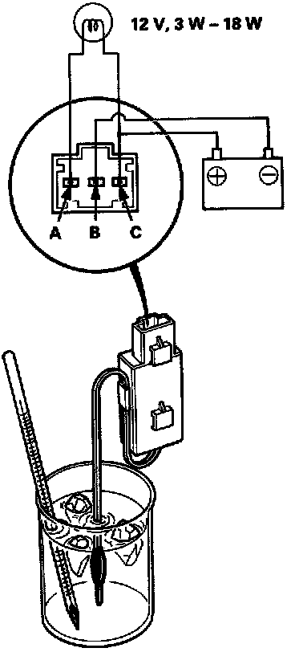

Evaporator Temperature Sensor / Switch: Testing and Inspection
A/C Thermostat Test
Connect battery power to terminal C and ground terminal B, and connect a test light between terminals A and C.
NOTE: Use a 12 V, 3W - 18W test light.
Dip the A/C thermostat into a cup filled with ice water, and check the test light.
The light should go OFF at 37°F (3°C) or less, and should come ON at 39°F (4°C) or more.
If the light doesn't come on and go off as specified, replace the A/C thermostat.